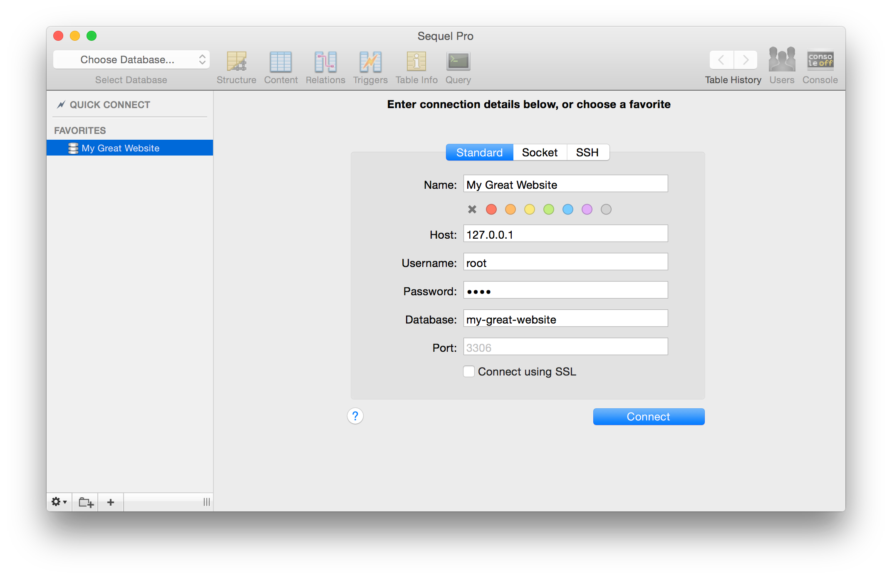

下载Sequel Pro MacOS X 10.6或更高版本 Mac OS X 原生的应用工具Sequel Pro是一款管理 Mysql 的工具，界面简洁易用，你可以一次性连接多个数据库，允许快速访问那些你经常需要访问的数据库。

Sequel Pro是一个快速，易于使用的Mac数据库管理应用程序，用于处理MySQL数据库。
无论您是Mac Web开发人员，程序员还是软件开发人员，您的工作流程都将与本机Mac OS X应用程序简化！
Sequel Pro使您可以直接访问本地和远程服务器上的MySQL数据库。
只需下载并连接到数据库即可。